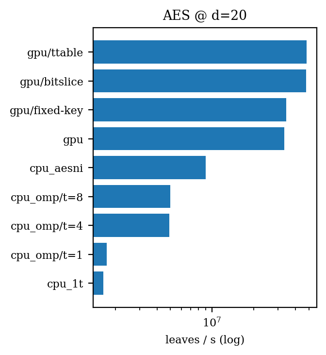

GGM Tree on GPU
AES-128 vs Spongent-π[176] on RTX 3060 — 2.5 minute version
UCSD ECE 268 Hardware Security · Spring 2026
Member 1 · Member 2 · Member 3
GGM in one diagram
From a length-doubling PRG $G(s) = G_0(s) \,||\, G_1(s)$, walk a binary tree from root $K$:
K
/ \
G_0(K) G_1(K)
/ \ / \
... G_1(G_0(K)) ...
⋮
F_K(x) = leaf reached by bit-string x
We materialize all $2^{d+1}-1$ nodes for $d \in [4, 24]$, then benchmark.
AES vs Spongent on GPU

Both are length-doubling PRGs in our GGM construction:
- AES-128 = block cipher with CPU silicon support (AES-NI)
- Spongent-π[176] = lightweight bit-level permutation; no CPU silicon
Despite Spongent's "lightweight" label, on commodity hardware AES wins by ~25×.
Headline numbers @ d=20

- GPU T-tables: ~50M leaves/s
- GPU S-box: ~30M leaves/s
- CPU AES-NI: ~8M leaves/s
- CPU OpenMP t=8: ~5M leaves/s
- CPU 1T: ~1.5M leaves/s
GPU T-tables is ~6× faster than CPU AES-NI, and ~30× over CPU single-thread.
Take-away
- GGM tree expansion maps cleanly to per-level GPU parallelism: at depth $\ell$, launch $2^\ell$ threads, each does one parent → two children.
- AES kernels: T-tables ≈ bitsliced > S-box ≈ fixed-key on RTX 3060.
- Spongent's hardware-friendly design doesn't translate into GPU throughput. ~25× slower than AES.
- CPU OpenMP over-subscription (t=16 on 8 cores) is catastrophically slow — a clean parallelism-scaling lesson.
Code, plots, report: github.com/…/ggm-tree